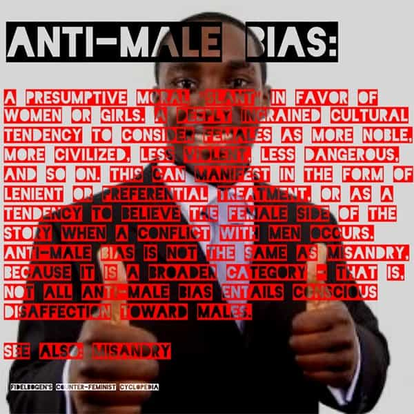

André is a young European who left his decaying country in 2012 for greener pastures. He enjoys exploring subterranean places, reading about a host of interconnected topics, and yearns for Tradition.


Western civilization is powerful, but as most powers, it is a double-edged sword. For the West has (very) often been generous, building and giving free stuff for people of all horizons, putting an end to a slavery that already existed long before modern times, and our technology was eagerly adopted by peoples who showed quite willing to get more stuff while working and dying less.
However, Western power has also brought globalism and degeneracy, especially in orbiting countries who will import anything made fashionable from their more influential brethren.
Brazil is just like that. In spite of its high violence rates, the country has its perks, like a strong sense of family and a high valuing of femininity in women. When you live in Brazil, dwelling into a safe place and having enough money is sufficient to live quite a good life. Yet the country did also import the worst.
Parties are ran with explicit policies against fat shaming. Libraries spill over with leftist BS, most of it translations of books from high-profile globalists like Henry Kissinger or Paul Krugman. And, of course, the local courts often follow current North American anti-male court politics.

A striking example of this made the news recently. Atercino Ferreira de Lima Filho, a 51-year-old divorced father, was recently released from prison after he was proven innocent. He spent 13 years in prison because of what is now recognized by Brazilian courts as a complete lie.
In 2002, Atercino and his spouse divorced. (The media do not tell whether she was the one willing to divorce or not, or why exactly they have split.) The couple had two children, Andrey, 8 years old, and Aline, 6. Although the divorced spouse was unable to support herself and has to rely on a female friend to give her shelter, she was awarded with both children. All three lived in the friend’s home.
Two years later, the police came to arrest Atercino at his home. The ex-wife claimed he had abused their children, who had written letters claiming they had been molested by their father. Atercino was soon declared guilty and sentenced to a whopping 27 years in prison.
Since then, Aternicino has been claiming his innocence. He never molested his sons, he said, and nothing of the sort had even happened from him. Too bad: his own testimony was treated as if it was worth nothing, and the magistrates have let him languish in the harsh environment he was locked up into.
Years later, in 2012, the older son Andrey turned 18. As soon as he became a legal adult Andrey requested the Tribunal of Justice of São Paulo to give him a new hearing as a witness and purported victim. Alas, the same magistrates who had sentenced his father turned him down because they “thought it wouldn’t be legally possible to reopen the case.”
They were wrong. Andrey proved motivated to get justice. He went to the cartório (registry office) and made a public, officially signed declaration, to say that his father did never molest him in any way. It took two years and a lot of efforts to reopen the case. Eventually, it pulled up to a much higher level of justice: the Supreme Federal Tribunal overturned the first verdict and ordered a new trial. “Facts and proofs” would be reexamined.
Since the sentence was based on testimonies alone, there was not much to reexamine without asking the protagonists. And so the new trial went on very slowly, as if a working father who had been thrown in jail out of dubious accusations was a simple abstract procedure rather than an actual human being.
Andrey, the older son
In 2015, Aline, the younger child, turned 18 and voiced the same points than her brother’s at the registry office. However, what would really speed up the process and bring justice was the implication of an NGO called Innocence Project Brazil.
It’s hard to guess, since NGOs are usually ran by globalists to carry mischievous deeds, but even an inverted clock gives the right time twice a day. Innocence Project took enough interest in the case to mobilize its own lawyers. These reexamined “facts and proof” with a keen eye. In 2016, they submitted an 829-pages long report pointing out several irregularities.
For example, a physical examination conducted during the first trial showed no evidence that the children had been sexually abused. Or the ex-wife who had accused Atercino had also claimed that her son had been abused at school, too, an accusation the judges ruled out without considering how this discarded claim should undermine the credibility of the whole accusation.
Testimonies featured noticeable discrepancies as well: when the children were interrogated, they said they father had molested them at night in the family home, whereas their mother had never seen this happen (although she still accused her ex-husband). Another testimony came from a nurse who, having babysat the children, said they were sociable and showed no sign of abuse. All these elements were neglected by judges who seemed decided to throw a father in jail.
Under the auspices of the Federal Tribunal, Andrey and Aline were at least allowed a fair hearing in August 2017. What they said then was chilling.
Both confided that their mother’s friend, at the home of which they had to dwell, had forced them to accuse their father. She compelled the children to write declaration of abuse that she had invented under the threat of beating them. Of course, this kind-of stepmother was never investigated and remained able to pull the strings during the first trial as the judges were focusing on an innocent.
Although the children had obeyed, and their father was sent to jail, she still lashed out on them. She took a sadistic pleasure at spanking them with a broom handle or forcing them to sit on uncomfortable postures. Sometimes, Andrey said, she was so violent that he had to flee the home and sleep in the streets. For some reason his mother failed to tell the police—for years. The wicked, manipulative child abuser was never processed. The media haven’t even disclosed her name.
On March 2 of this year, Atercino was released from prison. He spent 13 years locked up there and considered a pedophile. Rehabilitated by the Federal Tribunal, he left the penal institution to be welcomed not only by his Innocence Project lawyers but also by his son and daughter whom he embraced with tears. Likely exhausted, he decided not to sue his ex-wife.
Atercino right after he was freed, Andrey at his side
One can rejoice that the story ends well. No one today can accuse Atercino of having been a pedophile, as was the case for years. The freed father said he just wanted to share a beer, a pizza, and some good laughs with his sons and friends. Guess he got enough of the way of men in jail to ask for rest.
Still, this case is another sad example of female impunity. Neither the wicked, sadistic kind-of stepmother, nor the lying and cowardly mother who let her beat her own children for years, will be charged. In the Current Year, women can destroy men’s lives and never have to answer for their misdeeds whereas men and especially working fathers are assumed guilty without proof, in stark violation of the presumption of innocence principle.
Had this happened in the 90s, we would probably think that the trial was poorly conducted because Brazil is just another banana republic. Today, the West does not fare better. There are many swamps to be drained. Hopefully, when a sufficient number of dads have been screwed in court and children deprived of their parent, red-pilled awareness grows. May this event at least help to stimulate masculine energy and bolster a manosphere among our Portuguese-speaking brethren.
Read Next: 6 Reasons Why A Man Learning Game Should Also Do Brazilian Jiu Jitsu